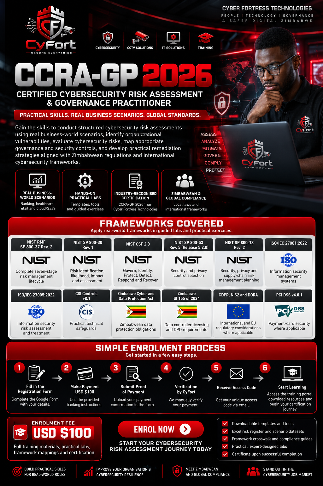

REAL BUSINESS SCENARIOS
Banking, healthcare, retail and international cloud services.
Build the skills to assess cybersecurity risk, select controls, develop remediation plans and communicate governance decisions across real-world business scenarios.
Banking, healthcare, retail and international cloud services.
Risk registers, structured assessment exercises and control mappings.
Completion-based CyFort credential; no external accreditation is implied.
Zimbabwean obligations and internationally used frameworks.
Mapped to practical exercises and applicable regulatory considerations.
Follow these six steps from registration to learning access.
Complete the enrolment form with your details.
Automatic email with banking and course instructions.
Email proof of payment as instructed.
CyFort manually confirms cleared funds.
Your unique access code is emailed after approval.
Enter the portal and begin your certification journey.
Complete the secure registration below. CyFort sends payment instructions by email, then manually verifies cleared funds before issuing a token.
Account takeover, privileged access, transaction integrity and third-party risk.
Patient information, ransomware, system availability and recovery.
POS systems, customer data, APIs and supplier access.
Identity, tenant isolation, CI/CD, secrets and resilience.
Scenarios reflect realistic business environments using synthetic training evidence. No unauthorised access to real organisations is required.
Approved learners can complete eight learning modules and graded knowledge checks. A separate practical lab must be approved by CyFort before certification.

After CyFort verifies payment, use the enrolment ID and access token emailed to you.
Sign in above, then select an assessment under Learning Modules.
Enter a certificate ID to check its status against the CyFort Academy database.
Official verification service of Cyber Fortress Technologies